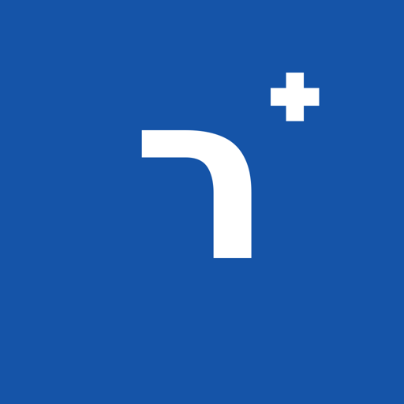
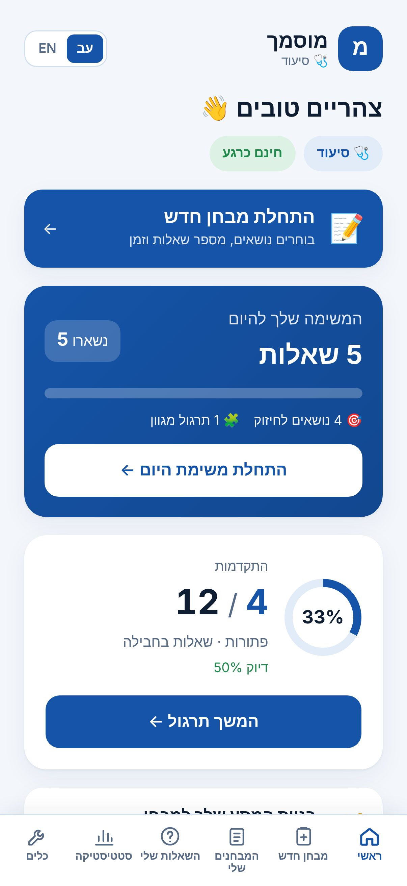
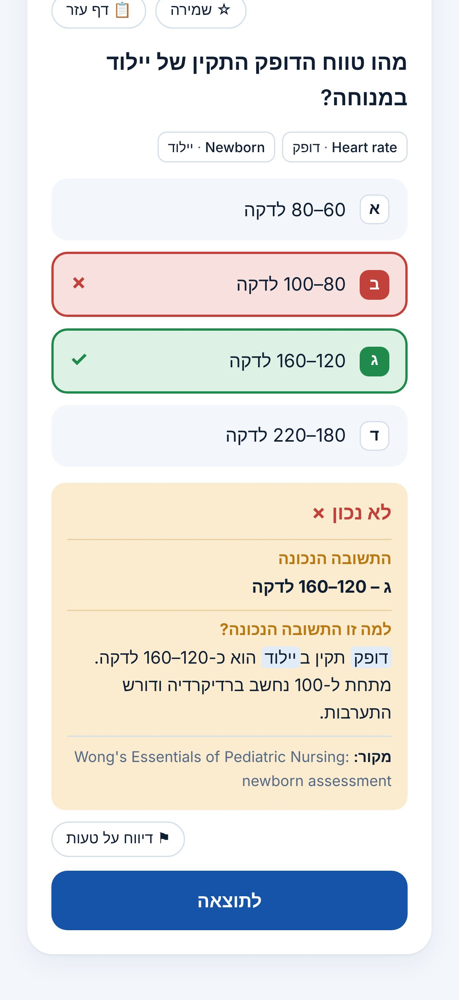
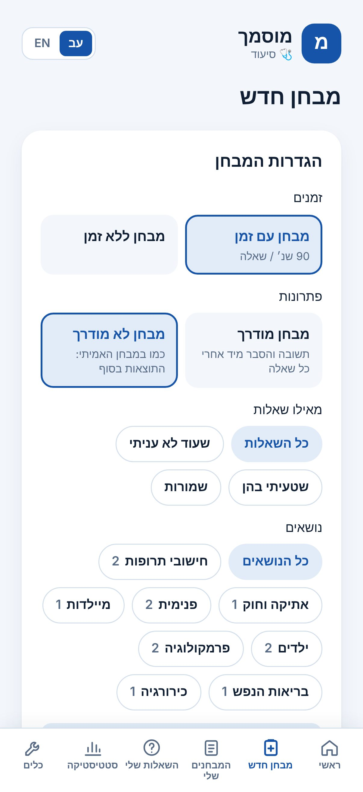
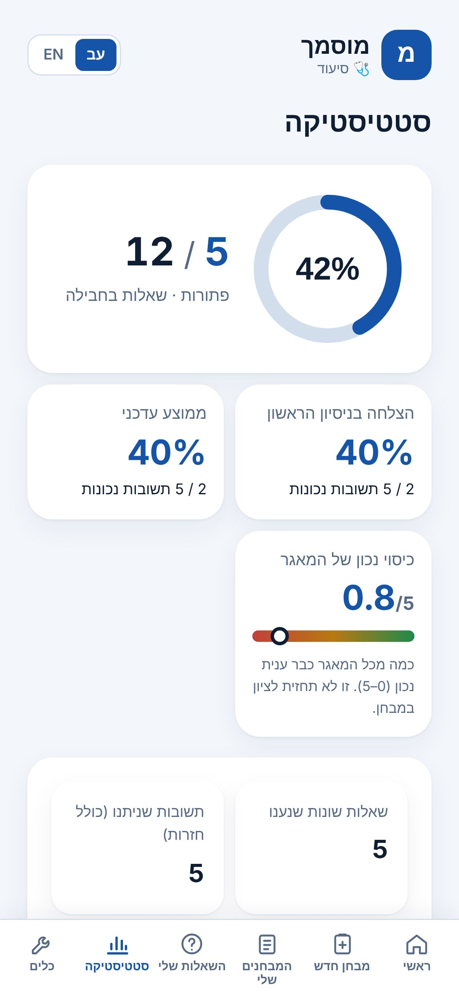

מוסמךשאלות תרגול לפי נושאים, מבחני תרגול עם זמן, משימה יומית קצרה ותוכנית לימוד אישית עד יום המבחן. בעברית ובאנגלית.
מתחילים בסיעוד, ובקרוב גם רפואה, פיזיותרפיה, ריפוי בעיסוק ורנטגן. כרגע הכול בחינם. נרשמים עם מייל, והתקדמות נשמרת גם בטלפון וגם במחשב.

אחרי כל שאלה: מה התשובה הנכונה, למה היא נכונה ולמה שאר התשובות שגויות, עם מקור.
בוחרים נושאים ומספר שאלות (עד 180), עם זמן או בלי, מודרך או כמו במבחן האמיתי. אפשר לעצור ולהמשיך.
10 שאלות שנבחרות בשבילך כל יום: טעויות שצריך לחזור עליהן, נושאים חלשים ותרגול מגוון.
שאלה שטעית בה חוזרת אחרי יום, ואז אחרי 3, 7, 14 ו-30 יום, עד שהיא נתפסת.
לפי תאריך המבחן והזמן שלך: מה עושים היום, מה השבוע, ומתי מבחני תרגול.
דיוק לפי נושא, הצלחה בניסיון הראשון, מבחנים קודמים וזמן לשאלה.
ערכי מעבדה, נוסחאות והמרות בתוך כל שאלה, ותרגול חישובי תרופות עם מספרים חדשים בכל פעם.
תחרות בכיף עם סטודנטים אחרים ואתגר יומי. רק כינוי ונקודות מוצגים, לא שם ולא מייל.
כל שאלה בשתי השפות, עם מילון מונחים עברית–אנגלית.



כרגע הכול בחינם.
השאלות נכתבות ונבדקות על ידי אח מוסמך, ולכל שאלה מצוין מקור. מצאת טעות? יש כפתור „דיווח על טעות” בכל שאלה.
בקרוב! אנחנו מכינים שאלות לבחינות הרישוי ברפואה, פיזיותרפיה, ריפוי בעיסוק ורנטגן. הן ייפתחו באפליקציה ברגע שיהיו מוכנות.
בינתיים אפשר להשתמש באפליקציה מהדפדפן בכל טלפון. גרסת אנדרואיד בדרך.
לא. מוסמך עוזר לתרגל ולחזור על החומר, ולא מבטיח ציון במבחן.